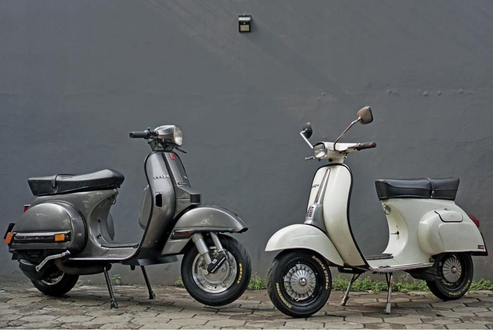
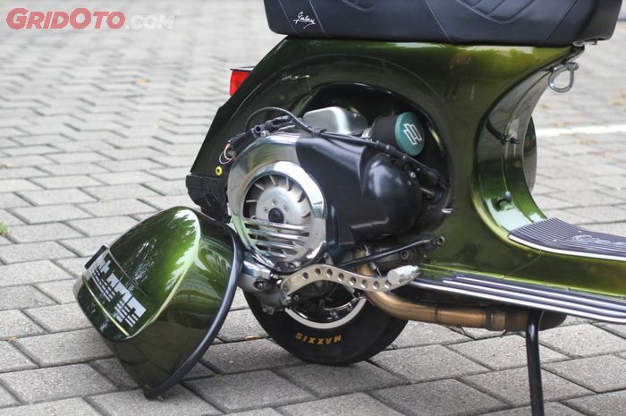
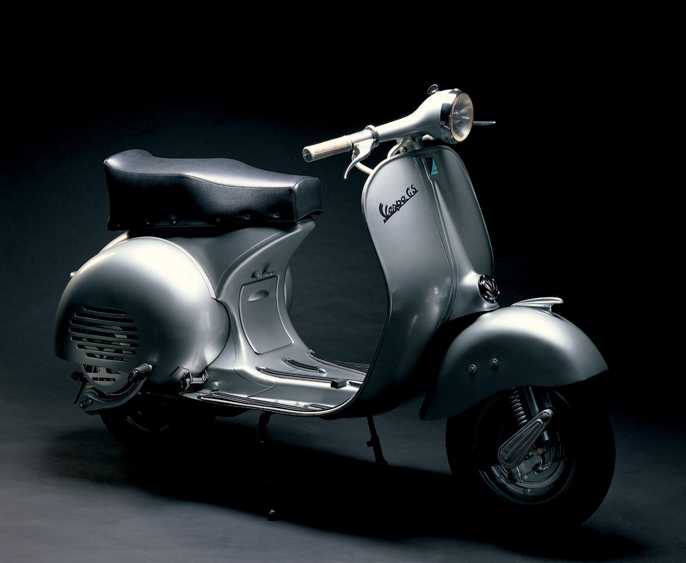
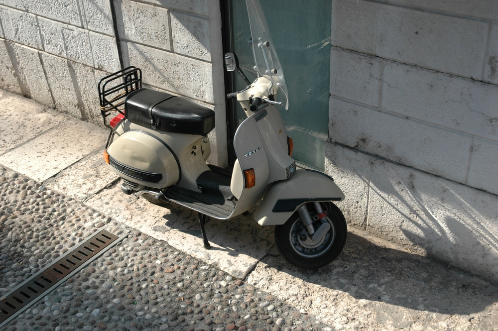
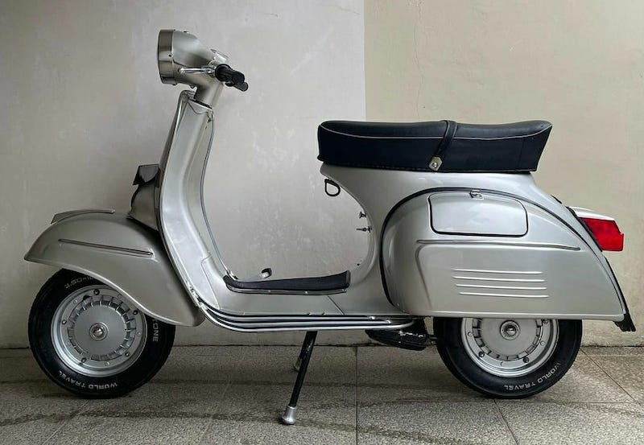
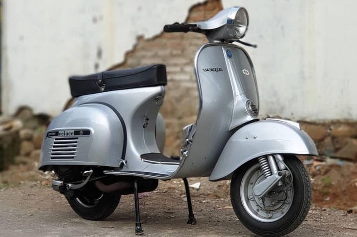
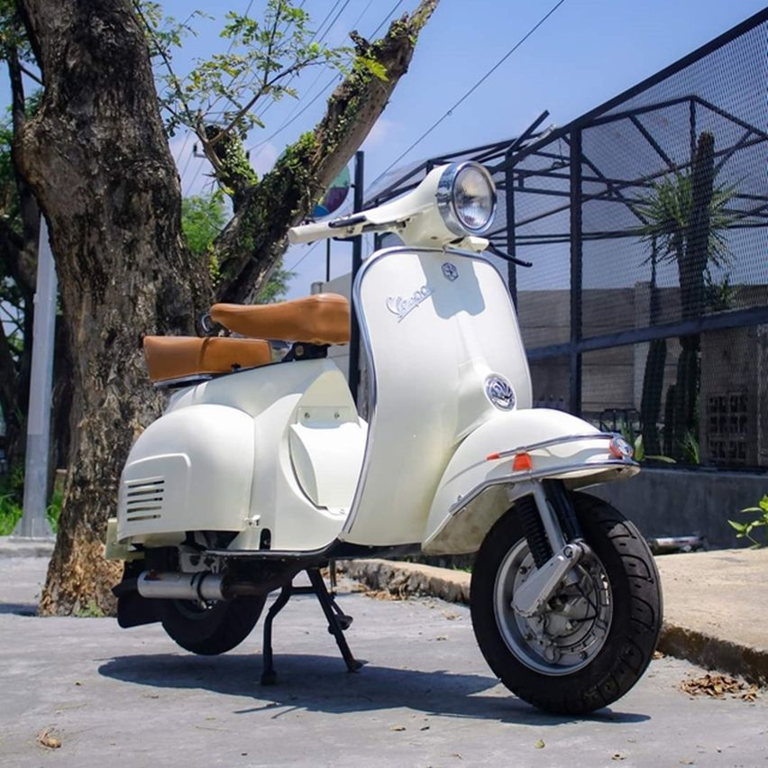

VESPA
Vespa adalah merek sepeda motor jenis skuter yang berasal dari Italia. Perusahaan induk dari Vespa, adalah Piaggio. Pada awal kedatangannya Vespa mempunyai saingan berat skuter Lambretta, sekarang otomatis Vespa sebagai motor skuter konvensional tidak mempunyai saingan lagi. Pasar sepeda motor Indonesia yang unik tidak memberikan kesempatan kepada Vespa untuk menjadi besar. Merek yang diedarkan oleh PT Dan Motor Indonesia ini mempunyai penggemar fanatik, dan klub-klub penggemar Vespa (terutama Vespa klasik) menjamur diberbagai kota di Indonesia, Juga sering disebut Piaggio Kodok karena mirip VW Kodok.dan vespa menjadi salah satu alat transportasi yang modern sampai saat ini.
MESIN
Sejarah Pembuatan Mesin Vespa Pada tahun 1946, sebuah perusahaan Italia bernama Piaggio memperkenalkan kendaraan baru yang disebut Vespa. Kendaraan ini awalnya didesain untuk membantu mobilitas masyarakat Italia pasca Perang Dunia II. Kemudian, mesin vespa dibuat oleh seorang insinyur bernama Corradino D’Ascanio. Dia merevolusi cara membuat mesin dengan menggunakan teknologi tiga roda berpenggerak belakang, yang membuat vespa menjadi kendaraan ikonik yang terkenal hingga saat ini.
About Me

Didirikan 23 April 1946 di Florence Kantor pusat Pontedera, Italia Induk Piaggio & Co. SpA
Popular Post



